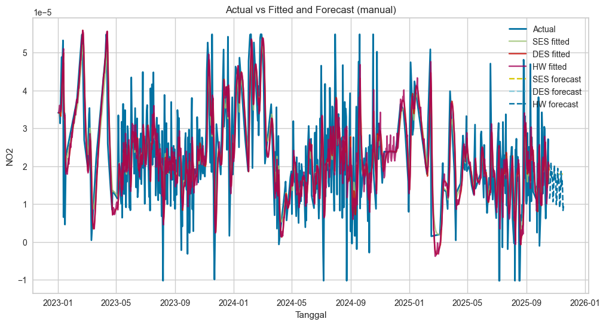
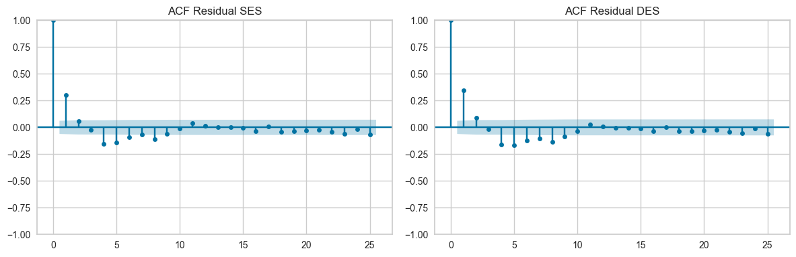
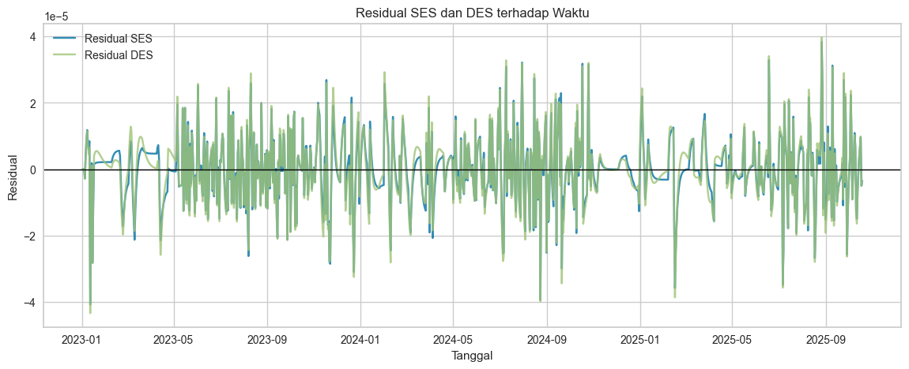
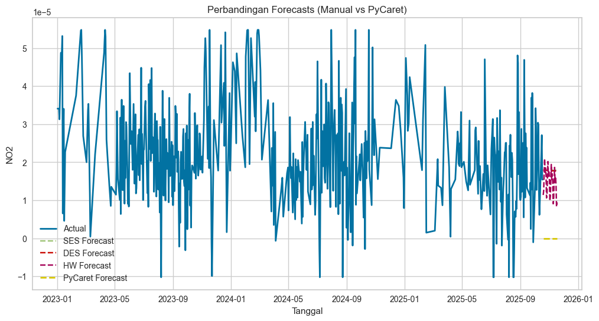

Forecasting NO₂ (Kwanyar)#
Notebook ini berisi:
Load data & deteksi kolom tanggal
Preprocessing (missing, outlier, freq fixing)
Implementasi rumus: SES / DES (Holt) / TES (Holt-Winters additive)
Terapkan SES/DES/TES ke dataset NO₂
Analisis residual singkat (ACF) dan residual vs waktu
PyCaret time series: setup, compare_models, finalize, predict
Visualisasi gabungan (manual vs PyCaret)
File data digunakan: NO2_Kwanyar.csv
1.Load data & deteksi kolom tanggal#
# Cell 2: Load data & deteksi kolom tanggal
import pandas as pd
import numpy as np
import matplotlib.pyplot as plt
from IPython.display import display
path = 'NO2_Kwanyar.csv' # <-- file lokal Anda
df_raw = pd.read_csv(path)
print("Columns found:", df_raw.columns.tolist())
display(df_raw.head())
# Detect date column from common names; fallback: parse any column with many parseable datetimes
date_cols = ['tanggal','date','Date','DATE','datetime','time','timestamp','waktu','tgl']
found_date_col = None
for c in date_cols:
if c in df_raw.columns:
found_date_col = c
break
if found_date_col is None:
# try inference
for c in df_raw.columns:
try:
parsed = pd.to_datetime(df_raw[c], errors='coerce')
if parsed.notna().sum() >= len(df_raw) * 0.6:
found_date_col = c
break
except:
pass
print("Detected date column:", found_date_col)
if found_date_col is None:
raise ValueError("Tidak menemukan kolom tanggal otomatis. Pastikan file memiliki kolom tanggal.")
# set index
df_raw[found_date_col] = pd.to_datetime(df_raw[found_date_col], errors='coerce')
df_raw = df_raw.set_index(found_date_col).sort_index()
display(df_raw.head())
print("Index range:", df_raw.index.min(), "->", df_raw.index.max())
---------------------------------------------------------------------------
FileNotFoundError Traceback (most recent call last)
Cell In[1], line 8
5 from IPython.display import display
7 path = 'NO2_Kwanyar.csv' # <-- file lokal Anda
----> 8 df_raw = pd.read_csv(path)
10 print("Columns found:", df_raw.columns.tolist())
11 display(df_raw.head())
File ~/.local/lib/python3.12/site-packages/pandas/io/parsers/readers.py:1026, in read_csv(filepath_or_buffer, sep, delimiter, header, names, index_col, usecols, dtype, engine, converters, true_values, false_values, skipinitialspace, skiprows, skipfooter, nrows, na_values, keep_default_na, na_filter, verbose, skip_blank_lines, parse_dates, infer_datetime_format, keep_date_col, date_parser, date_format, dayfirst, cache_dates, iterator, chunksize, compression, thousands, decimal, lineterminator, quotechar, quoting, doublequote, escapechar, comment, encoding, encoding_errors, dialect, on_bad_lines, delim_whitespace, low_memory, memory_map, float_precision, storage_options, dtype_backend)
1013 kwds_defaults = _refine_defaults_read(
1014 dialect,
1015 delimiter,
(...) 1022 dtype_backend=dtype_backend,
1023 )
1024 kwds.update(kwds_defaults)
-> 1026 return _read(filepath_or_buffer, kwds)
File ~/.local/lib/python3.12/site-packages/pandas/io/parsers/readers.py:620, in _read(filepath_or_buffer, kwds)
617 _validate_names(kwds.get("names", None))
619 # Create the parser.
--> 620 parser = TextFileReader(filepath_or_buffer, **kwds)
622 if chunksize or iterator:
623 return parser
File ~/.local/lib/python3.12/site-packages/pandas/io/parsers/readers.py:1620, in TextFileReader.__init__(self, f, engine, **kwds)
1617 self.options["has_index_names"] = kwds["has_index_names"]
1619 self.handles: IOHandles | None = None
-> 1620 self._engine = self._make_engine(f, self.engine)
File ~/.local/lib/python3.12/site-packages/pandas/io/parsers/readers.py:1880, in TextFileReader._make_engine(self, f, engine)
1878 if "b" not in mode:
1879 mode += "b"
-> 1880 self.handles = get_handle(
1881 f,
1882 mode,
1883 encoding=self.options.get("encoding", None),
1884 compression=self.options.get("compression", None),
1885 memory_map=self.options.get("memory_map", False),
1886 is_text=is_text,
1887 errors=self.options.get("encoding_errors", "strict"),
1888 storage_options=self.options.get("storage_options", None),
1889 )
1890 assert self.handles is not None
1891 f = self.handles.handle
File ~/.local/lib/python3.12/site-packages/pandas/io/common.py:873, in get_handle(path_or_buf, mode, encoding, compression, memory_map, is_text, errors, storage_options)
868 elif isinstance(handle, str):
869 # Check whether the filename is to be opened in binary mode.
870 # Binary mode does not support 'encoding' and 'newline'.
871 if ioargs.encoding and "b" not in ioargs.mode:
872 # Encoding
--> 873 handle = open(
874 handle,
875 ioargs.mode,
876 encoding=ioargs.encoding,
877 errors=errors,
878 newline="",
879 )
880 else:
881 # Binary mode
882 handle = open(handle, ioargs.mode)
FileNotFoundError: [Errno 2] No such file or directory: 'NO2_Kwanyar.csv'
2.Preprocessing#
Langkah: drop duplicates, handle missing, resample (jika perlu), deteksi frekuensi, outlier handling (IQR capping), optional seasonal decomposition.
# Cell 3: Preprocessing
# 1) Drop duplicated index
df = df_raw[~df_raw.index.duplicated(keep='first')].copy()
# 2) Tentukan kolom NO2
target_col = None
for col in ['NO2','no2','NO_2','no_2','NOx','no_x']:
if col in df.columns:
target_col = col
break
if target_col is None:
numeric_cols = df.select_dtypes('number').columns.tolist()
if len(numeric_cols) == 0:
raise ValueError("Tidak menemukan kolom numerik untuk target NO2.")
target_col = numeric_cols[0]
print("Target column chosen:", target_col)
# 3) Pastikan index datetime
df.index = pd.to_datetime(df.index)
# 4) Pastikan freq: infer, jika None -> paksa daily ('D')
inferred = pd.infer_freq(df.index)
print("Inferred freq before forcing:", inferred)
if inferred is None:
# force daily (jika data lebih granular UBah jika diperlukan ke 'H' atau 'M')
df = df.asfreq('D')
print("Forced freq = 'D'")
else:
df = df.asfreq(inferred)
print("Set freq to inferred:", inferred)
print("Index freq after:", df.index.freq)
# 5) Impute missing: time-interpolate + backfill/ffill
df[target_col] = df[target_col].astype(float) # pastikan float
df[target_col] = df[target_col].interpolate(method='time')
df[target_col] = df[target_col].fillna(method='bfill').fillna(method='ffill')
print("Missing after imputation:", df[target_col].isna().sum())
# 6) Outlier handling: IQR capping
def iqr_cap(s):
q1 = s.quantile(0.25)
q3 = s.quantile(0.75)
iqr = q3 - q1
lower = q1 - 1.5 * iqr
upper = q3 + 1.5 * iqr
return s.clip(lower, upper)
df[target_col] = iqr_cap(df[target_col])
# 7) Final working series
series_final = df[target_col].dropna().copy()
series_final.name = 'NO2'
print("Final series length:", len(series_final))
display(series_final.head())
display(series_final.describe())
Target column chosen: NO2
Inferred freq before forcing: None
Forced freq = 'D'
Index freq after: <Day>
Missing after imputation: 0
Final series length: 1022
Tanggal
2023-01-01 0.000034
2023-01-02 0.000034
2023-01-03 0.000034
2023-01-04 0.000034
2023-01-05 0.000031
Freq: D, Name: NO2, dtype: float64
count 1022.000000
mean 0.000023
std 0.000013
min -0.000010
25% 0.000014
50% 0.000022
75% 0.000030
max 0.000055
Name: NO2, dtype: float64
3.Perhitungan Manual: SES, DES (Holt), dan TES (Holt-Winters additive)#
Pada bagian ini kita implementasikan rumus yang ada di makalah:
SES: S_t = α Y_t + (1-α) S_{t-1}
DES (Holt): level L_t dan trend T_t
L_t = α Y_t + (1-α)(L_{t-1} + T_{t-1})
T_t = β (L_t - L_{t-1}) + (1-β) T_{t-1}
forecast: Ŷ_{t+h} = L_t + h T_t
TES (Holt-Winters additive): level, trend, seasonal index (untuk m periode)
rumus additive sesuai makalah.
Berikut fungsi implementasinya (classical formulas).
# implementasi fungsi SES, DES, Holt-Winters additive
import numpy as np
def SES(series, alpha, h=30):
S = [series.iloc[0]]
fitted = [np.nan]
for t in range(1, len(series)):
s_t = alpha * series.iloc[t] + (1 - alpha) * S[-1]
S.append(s_t)
fitted.append(S[-2])
freq = series.index.freq or series.index.inferred_freq or 'D'
step = pd.tseries.frequencies.to_offset(freq)
idx = pd.date_range(series.index[-1] + step, periods=h, freq=freq)
return pd.Series(fitted, index=series.index), pd.Series([S[-1]]*h, index=idx)
def DES(series, alpha, beta, h=30):
L = [series.iloc[0]]
if len(series) > 1:
T = [series.iloc[1] - series.iloc[0]]
else:
T = [0.0]
fitted = [np.nan]
for t in range(1, len(series)):
L_t = alpha * series.iloc[t] + (1 - alpha) * (L[-1] + T[-1])
T_t = beta * (L_t - L[-1]) + (1 - beta) * T[-1]
L.append(L_t); T.append(T_t)
fitted.append(L[-2] + T[-2])
freq = series.index.freq or series.index.inferred_freq or 'D'
step = pd.tseries.frequencies.to_offset(freq)
idx = pd.date_range(series.index[-1] + step, periods=h, freq=freq)
forecast = pd.Series([L[-1] + (i+1) * T[-1] for i in range(h)], index=idx)
return pd.Series(fitted, index=series.index), forecast
def holt_winters_additive(series, alpha, beta, gamma, m, h=30):
n = len(series)
if n < 2*m:
raise ValueError("Series too short for Holt-Winters with m=%d" % m)
# initial seasonal indices
seasonals = {}
season_averages = []
n_seasons = int(n / m)
for j in range(n_seasons):
season_averages.append(series.iloc[j*m:(j+1)*m].mean())
for i in range(m):
sum_of_vals_over_avg = 0.0
for j in range(n_seasons):
sum_of_vals_over_avg += series.iloc[j*m + i] - season_averages[j]
seasonals[i] = sum_of_vals_over_avg / n_seasons
L = [series.iloc[:m].mean()]
T = [ (series.iloc[m:2*m].mean() - series.iloc[:m].mean()) / m ]
fitted = [np.nan] * n
for i in range(n):
if i == 0:
fitted[i] = np.nan
continue
val = series.iloc[i]
s_i = seasonals[i % m]
L_t = alpha * (val - s_i) + (1 - alpha) * (L[-1] + T[-1])
T_t = beta * (L_t - L[-1]) + (1 - beta) * T[-1]
seasonals[i % m] = gamma * (val - L_t) + (1 - gamma) * s_i
L.append(L_t); T.append(T_t)
fitted[i] = L[-2] + T[-2] + seasonals[(i-1) % m]
freq = series.index.freq or series.index.inferred_freq or 'D'
step = pd.tseries.frequencies.to_offset(freq)
idx = pd.date_range(series.index[-1] + step, periods=h, freq=freq)
last_L, last_T = L[-1], T[-1]
forecast = []
for i in range(h):
m_i = (n + i) % m
forecast.append(last_L + (i+1) * last_T + seasonals[m_i])
fitted_series = pd.Series(fitted, index=series.index)
forecast_series = pd.Series(forecast, index=idx)
return fitted_series, forecast_series
4.Terapkan SES/DES/TES dengan parameter contoh dan plot hasil fitting + forecast#
Gunakan parameter default alpha/beta/gamma yang bisa Anda ubah.
# Terapkan SES / DES / TES
alpha = 0.3
beta = 0.1
gamma = 0.1
h = 30
# pilih m (seasonal period) berdasarkan frekuensi; default weekly = 7
freq = pd.infer_freq(series_final.index)
if freq is None:
m = 7
else:
if 'M' in freq:
m = 12
elif 'D' in freq:
m = 7
elif 'H' in freq:
m = 24
else:
m = 7
print("Chosen seasonal period m =", m, "inferred freq:", freq)
ses_fitted, ses_fore = SES(series_final, alpha=alpha, h=h)
des_fitted, des_fore = DES(series_final, alpha=alpha, beta=beta, h=h)
hw_ok = False
try:
hw_fitted, hw_fore = holt_winters_additive(series_final, alpha=alpha, beta=beta, gamma=gamma, m=m, h=h)
hw_ok = True
except Exception as e:
print("Holt-Winters not applied (reason):", e)
hw_ok = False
# Show head of fitted and forecast
print("SES fitted (head):")
display(ses_fitted.dropna().head())
print("DES fitted (head):")
display(des_fitted.dropna().head())
print("SES forecast (first 5):")
display(ses_fore.head())
print("DES forecast (first 5):")
display(des_fore.head())
if hw_ok:
print("HW forecast (first 5):")
display(hw_fore.head())
Chosen seasonal period m = 7 inferred freq: D
SES fitted (head):
Tanggal
2023-01-02 0.000034
2023-01-03 0.000034
2023-01-04 0.000034
2023-01-05 0.000034
2023-01-06 0.000033
Freq: D, dtype: float64
DES fitted (head):
Tanggal
2023-01-02 0.000034
2023-01-03 0.000034
2023-01-04 0.000034
2023-01-05 0.000034
2023-01-06 0.000033
Freq: D, dtype: float64
SES forecast (first 5):
2025-10-19 0.000018
2025-10-20 0.000018
2025-10-21 0.000018
2025-10-22 0.000018
2025-10-23 0.000018
Freq: D, dtype: float64
DES forecast (first 5):
2025-10-19 0.000018
2025-10-20 0.000018
2025-10-21 0.000018
2025-10-22 0.000018
2025-10-23 0.000018
Freq: D, dtype: float64
HW forecast (first 5):
2025-10-19 0.000011
2025-10-20 0.000013
2025-10-21 0.000018
2025-10-22 0.000021
2025-10-23 0.000017
Freq: D, dtype: float64
5.Plot manual fits + forecasts#
# Cell 7: Plot manual fits + forecasts
plt.figure(figsize=(12,6))
plt.plot(series_final.index, series_final.values, label='Actual', linewidth=2)
plt.plot(ses_fitted.index, ses_fitted.values, label='SES fitted', alpha=0.8)
plt.plot(des_fitted.index, des_fitted.values, label='DES fitted', alpha=0.8)
if hw_ok:
plt.plot(hw_fitted.index, hw_fitted.values, label='HW fitted', alpha=0.8)
plt.plot(ses_fore.index, ses_fore.values, '--', label='SES forecast')
plt.plot(des_fore.index, des_fore.values, '--', label='DES forecast')
if hw_ok:
plt.plot(hw_fore.index, hw_fore.values, '--', label='HW forecast')
plt.legend(); plt.title('Actual vs Fitted and Forecast (manual)'); plt.xlabel('Tanggal'); plt.ylabel('NO2')
plt.grid(True); plt.show()

6.Analisis residual singkat (ACF) + residual vs waktu#
# Analisis residual (ACF) dan residual vs waktu
from statsmodels.graphics.tsaplots import plot_acf
# Ensure fitted aligned with actual index
ses_fitted = ses_fitted.reindex(series_final.index)
des_fitted = des_fitted.reindex(series_final.index)
res_ses = (series_final - ses_fitted).dropna()
res_des = (series_final - des_fitted).dropna()
print("Residual sizes: SES:", len(res_ses), "DES:", len(res_des))
# ACF plots
plt.figure(figsize=(12,4))
plt.subplot(1,2,1)
plot_acf(res_ses, lags=25, ax=plt.gca()); plt.title('ACF Residual SES')
plt.subplot(1,2,2)
plot_acf(res_des, lags=25, ax=plt.gca()); plt.title('ACF Residual DES')
plt.tight_layout(); plt.show()
# Residual vs time
plt.figure(figsize=(14,5))
plt.plot(res_ses.index, res_ses.values, label='Residual SES', alpha=0.8)
plt.plot(res_des.index, res_des.values, label='Residual DES', alpha=0.8)
plt.axhline(0, color='black', linewidth=1)
plt.legend(); plt.title('Residual SES dan DES terhadap Waktu'); plt.xlabel('Tanggal'); plt.ylabel('Residual'); plt.grid(True)
plt.show()
Residual sizes: SES: 1021 DES: 1021


7.PyCaret setup & compare (disarankan untuk PyCaret 3.3.2)#
Jika pycaret belum terpasang, jalankan pip install terlebih dahulu.#
# PyCaret setup & compare (disarankan untuk PyCaret 3.3.2)
# Jika pycaret belum terpasang, jalankan pip install terlebih dahulu.
try:
from pycaret.time_series import *
except Exception as e:
raise ImportError("PyCaret tidak ditemukan. Install pycaret 3.x dan dependensinya. Error: " + str(e))
# Prepare df specifically for PyCaret (use series_final)
df_py = series_final.copy()
df_py.index = pd.to_datetime(df_py.index)
df_py = df_py.asfreq('D') # pastikan freq harian; ubah jika data hourly/monthly
# final checks
print("PyCaret input freq:", df_py.index.freq, "unique values:", df_py.nunique())
# Setup - keep it fast & safe
exp = setup(
data = df_py,
fh = 30,
fold = 2,
seasonal_period = 7, # paksa weekly seasonality jika cocok
n_jobs = -1,
session_id = 42
)
# Compare models - pilih subset agar cepat; ETS mencakup SES/DES/TES
best = compare_models(include=["ets","arima","theta"])
print("Best model:", best)
final = finalize_model(best)
preds = predict_model(final, fh=30)
print("Preview preds:")
display(preds.head())
PyCaret input freq: <Day> unique values: 1001
| Description | Value | |
|---|---|---|
| 0 | session_id | 42 |
| 1 | Target | NO2 |
| 2 | Approach | Univariate |
| 3 | Exogenous Variables | Not Present |
| 4 | Original data shape | (1022, 1) |
| 5 | Transformed data shape | (1022, 1) |
| 6 | Transformed train set shape | (992, 1) |
| 7 | Transformed test set shape | (30, 1) |
| 8 | Rows with missing values | 0.0% |
| 9 | Fold Generator | ExpandingWindowSplitter |
| 10 | Fold Number | 2 |
| 11 | Enforce Prediction Interval | False |
| 12 | Splits used for hyperparameters | all |
| 13 | User Defined Seasonal Period(s) | 7 |
| 14 | Ignore Seasonality Test | False |
| 15 | Seasonality Detection Algo | user_defined |
| 16 | Max Period to Consider | 60 |
| 17 | Seasonal Period(s) Tested | [7] |
| 18 | Significant Seasonal Period(s) | [7] |
| 19 | Significant Seasonal Period(s) without Harmonics | [7] |
| 20 | Remove Harmonics | False |
| 21 | Harmonics Order Method | harmonic_max |
| 22 | Num Seasonalities to Use | 1 |
| 23 | All Seasonalities to Use | [7] |
| 24 | Primary Seasonality | 7 |
| 25 | Seasonality Present | True |
| 26 | Seasonality Type | add |
| 27 | Target Strictly Positive | False |
| 28 | Target White Noise | No |
| 29 | Recommended d | 1 |
| 30 | Recommended Seasonal D | 0 |
| 31 | Preprocess | False |
| 32 | CPU Jobs | -1 |
| 33 | Use GPU | False |
| 34 | Log Experiment | False |
| 35 | Experiment Name | ts-default-name |
| 36 | USI | 7473 |
| Model | MASE | RMSSE | MAE | RMSE | MAPE | SMAPE | R2 | TT (Sec) | |
|---|---|---|---|---|---|---|---|---|---|
| ets | ETS | 1.3765 | 1.3254 | 0.0000 | 0.0000 | 2.6375 | 1.1644 | -1.8293 | 4.3550 |
| theta | Theta Forecaster | 1.7107 | 1.5322 | 0.0000 | 0.0000 | 3.1987 | 1.4315 | -2.7794 | 1.8500 |
| arima | ARIMA | 1.7550 | 1.6680 | 0.0000 | 0.0000 | 3.2014 | 1.1254 | -3.4646 | 3.8750 |
Best model: AutoETS(seasonal='add', sp=7, trend='add')
Preview preds:
| y_pred | |
|---|---|
| 2025-10-19 | 0.0 |
| 2025-10-20 | 0.0 |
| 2025-10-21 | 0.0 |
| 2025-10-22 | 0.0 |
| 2025-10-23 | 0.0 |
8.Visualisasi gabungan#
# Visualisasi gabungan
def to_dt(idx):
return idx.to_timestamp() if hasattr(idx, 'to_timestamp') else pd.to_datetime(idx)
try:
if preds is not None:
pred_col = preds.columns[0] # otomatis ambil nama kolom prediksi
actual_idx = to_dt(series_final.index)
preds_idx = to_dt(preds.index)
plt.figure(figsize=(12,6))
plt.plot(actual_idx, series_final.values, label='Actual', linewidth=2)
# manual forecasts
plt.plot(to_dt(ses_fore.index), ses_fore.values, '--', label='SES Forecast')
plt.plot(to_dt(des_fore.index), des_fore.values, '--', label='DES Forecast')
if hw_ok:
plt.plot(to_dt(hw_fore.index), hw_fore.values, '--', label='HW Forecast')
# pycaret forecast
plt.plot(preds_idx, preds[pred_col], '--', label='PyCaret Forecast', linewidth=2)
plt.title('Perbandingan Forecasts (Manual vs PyCaret)')
plt.xlabel('Tanggal'); plt.ylabel('NO2')
plt.legend(); plt.grid(True); plt.show()
else:
print("Variabel 'preds' kosong. PyCaret mungkin gagal atau belum dijalankan.")
except Exception as e:
print("Visualisasi gabungan gagal:", e)
# debugging prints
try:
print("preds columns:", None if preds is None else preds.columns)
print("sample preds head:", None if preds is None else preds.head())
except:
pass

9.Evaluasi singkat (MAE, RMSE) pada split terakhir (hanya contoh)#
# Cell 11: Evaluasi singkat (MAE, RMSE) pada split terakhir (hanya contoh)
from sklearn.metrics import mean_absolute_error, mean_squared_error
import numpy as np
# Jika ingin evaluasi pada in-sample last h points, kita bisa bandingkan deskriptif:
# contoh: ambil last h actual dan bandingkan dgn ses_fore/des_fore index jika overlap
h = 30
# Jika preds tersedia, hitung MAE/RMSE terhadap preds jika ada actual untuk horizon (biasanya tidak)
if preds is not None:
pred_col = preds.columns[0]
# preds.index dapat berisi datetimes setelah akhir series
# tidak ada actual untuk horizon unless Anda punya holdout; hanya tampilkan preds summary
print("Preds summary:")
display(preds.describe())
else:
print("Preds tidak tersedia — tidak ada metrik forecast out-of-sample yang bisa dihitung.")
Preds summary:
| y_pred | |
|---|---|
| count | 30.0 |
| mean | 0.0 |
| std | 0.0 |
| min | 0.0 |
| 25% | 0.0 |
| 50% | 0.0 |
| 75% | 0.0 |
| max | 0.0 |